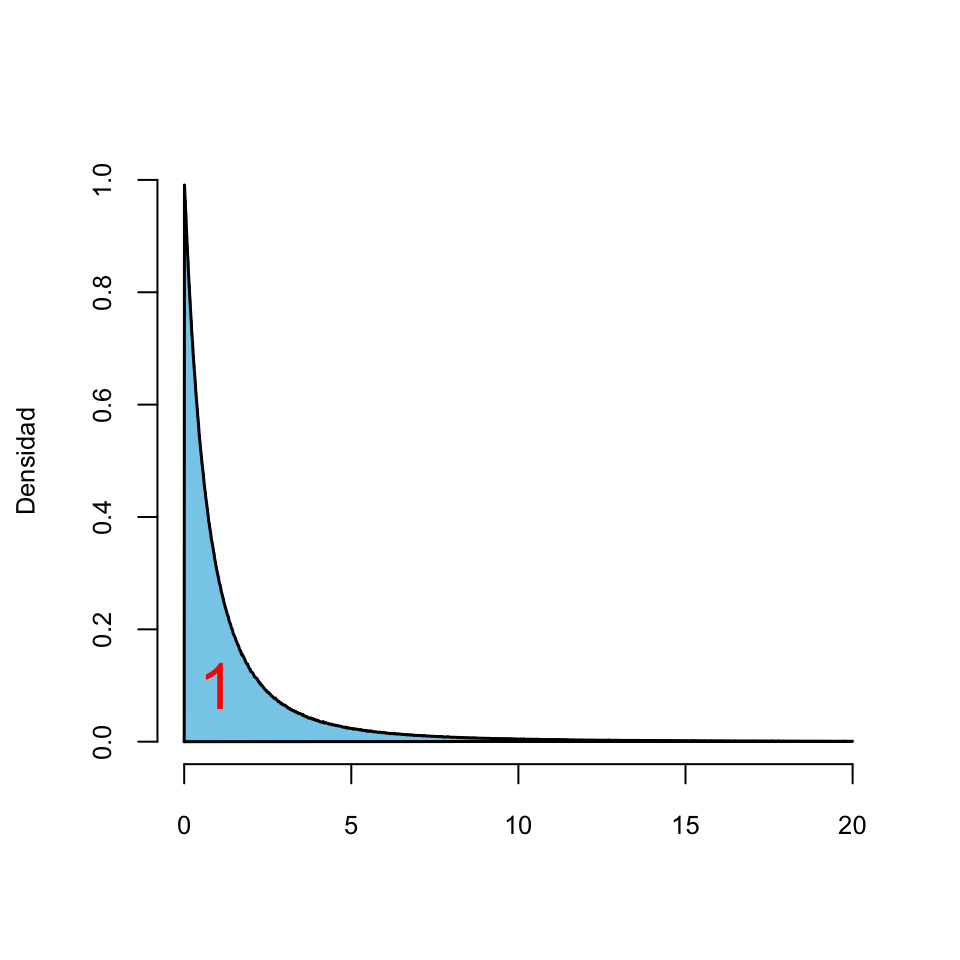
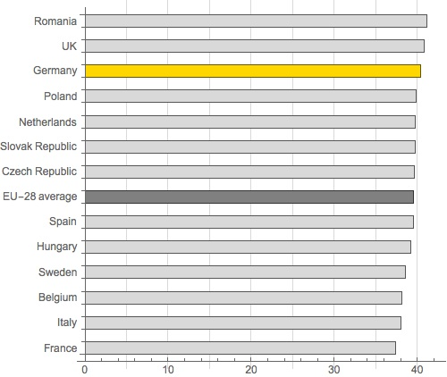

Tema 2 Estadística descriptiva
En esta lección explicamos algunas técnicas básicas de estadística descriptiva. Estas técnicas consistirán en una serie de valores y gráficos que nos permitirán resumir y explorar un conjunto de datos, con el objetivo final de entenderlos lo mejor posible.
2.1 Tipos de datos
Los datos de los que disponemos suelen ser multidimensionales, en el sentido de que observamos varias características (variables) de una serie de individuos. Almacenamos estos datos en tablas de datos como la Tabla 2.1, donde cada columna corresponde a una variable y cada fila son los datos de un individuo concreto. Así, en esta tabla, cada fila representa un niño y cada columna las características que hemos anotado de estos niños: su nombre, su altura (en cm), su número de hermanos, el color de sus cabellos, y el número semanal de refrescos que suele tomar.
| Nombre | Altura | Hermanos | Cabello | Refrescos.Semana |
|---|---|---|---|---|
| Marta | 135 | 2 | rubio | 2-3 |
| Laura | 132 | 1 | negro | 2-3 |
| Xavier | 138 | 0 | negro | 0-1 |
| Joan | 141 | 3 | castaño | 4-5 |
| Maria | 134 | 2 | rojo | 0-1 |
| Maria | 136 | 1 | castaño | 5 o más |
A su vez, estas tablas de datos se guardan en el ordenador en un archivo con un formato preestablecido: texto simple, hojas de cálculo en formato Open Office o Excel, etc.
Los tipos básicos de datos que consideramos en este curso son los siguientes:
Datos cualitativos. Son los que expresan una cualidad del individuo, tales como el sexo, el nombre, la especie… Si solo pueden tomar dos valores (por ejemplo “Sí” y “No”, o “Hombre” y “Mujer”) los llamamos dicotómicos y si pueden tomar más de dos valores, multicotómicos.
Los datos cualitativos pueden ser iguales o distintos, y no admiten ningún otro tipo de comparación.
Datos ordinales. Son datos similares a los cualitativos, en el sentido de que expresan una cualidad del individuo, pero con la diferencia de que se pueden ordenar de manera natural. Por ejemplo, los niveles de gravedad de una enfermedad (sano, leve, grave, muy grave, …) o las calificaciones en un examen (suspenso, aprobado, notable, sobresaliente) son datos ordinales. En cambio, no se pueden ordenar de manera significativa los sexos o los tipos de cáncer de los individuos.
Datos cuantitativos. Son datos que se refieren a medidas que sean números genuinos, tales como edades, longitudes, pesos, tiempos, números de individuos, etc. Distinguimos dos tipos:
Discretos: Pueden tomar solo valores que avanzan a saltos y que podemos identificar con números naturales: número de hermanos, número de ingresos en un día en un hospital…
Continuos: Podrían tomar cualquier valor real dentro de un intervalo si se pudieran medir con precisión infinita: altura, temperatura, tiempo…
El análisis, tanto descriptivo como inferencial, de un conjunto de datos es diferente según su tipo. Así, para datos cualitativos sólo tiene interés estudiar y representar las frecuencias con que aparecen sus diferentes valores, mientras que el análisis de datos cuantitativos suele involucrar el cálculo de medidas estadísticas que evalúen numéricamente sus propiedades.
2.2 Descripción de datos cualitativos
Los datos cualitativos corresponden a observaciones sobre cualidades de un objeto o individuo, tales como su especie o su sexo, que pueden ser iguales o diferentes, pero que no admiten ningún otro tipo de comparación significativa: por ejemplo, datos para los que no tenga ningún sentido preguntarse si uno es más grande que otro, ni efectuar operaciones aritméticas con ellos, aunque estén representados por números. Llamaremos niveles a los diferentes valores que puede tomar una variable cualitativa; por ejemplo, los dos niveles de una variable Sexo serían “Macho” y “Hembra”, o sinónimos.
2.2.1 Frecuencias
Lo único que podemos hacer con una variable cualitativa es contar cuántas veces aparece cada nivel y presentar estos resultados por medio de una tabla o un gráfico:
Frecuencia absoluta de un nivel: el número de veces que aparece en la variable
Frecuencia relativa de un nivel: la fracción del total de la variable que representa este nivel
Además, llamaremos la moda al nivel (o a los niveles, en caso de empate) más frecuente. A veces usaremo adjetivos como unimodal, bimodal, multimodal etc. para referirnos, respectivamente, a una variable con una sola moda, con dos modas, con “varias” modas, etc.
Mujer, Mujer, Hombre, Mujer, Mujer, Mujer, Mujer, Mujer, Hombre, Mujer Hombre, Hombre, Mujer, Mujer, Hombre, Mujer, Mujer, Mujer, Mujer, Hombre.
Sus dos niveles son Hombre y Mujer. En esta variable hay 14 mujeres y 6 hombres. Por lo tanto, éstas son las frecuencias absolutas de estos niveles. Puesto que en total hay 20 individuos, sus frecuencias relativas son:
Hombre: 6/20=0.3
Mujer: 14/20=0.7
Resumimos estos valores en la tabla de frecuencias siguiente:
| Frecuencia absoluta | Frecuencia relativa | Porcentaje | |
|---|---|---|---|
| Hombre | 6 | 0.3 | 30% |
| Mujer | 14 | 0.7 | 70% |
| Total | 20 | 1.0 | 100% |
2.2.2 Gráficos
Podemos representar una tabla como la anterior mediante un diagrama de barras, en el que para cada nivel dibujemos una barra cuya altura represente su frecuencia (absoluta o relativa):


Un tipo muy popular de representación gráfica de variables cualitativas son los diagramas circulares (o diagramas de quesitos), donde se representan los niveles de una variable cualitativa como sectores circulares de un círculo, de manera que el ángulo (o equivalentemente, el área) de cada sector sea proporcional a la frecuencia del nivel al que corresponde. El diagrama circular de la variable dicotómica Sexo sería el siguiente:

Pese a su popularidad, es poco recomendable usar diagramas circulares cuando manejamos más de dos niveles, porque a veces es difícil, a simple vista, comprender las relaciones entre las frecuencias que representan. Para convencerse, basta comparar los diagramas de barras y los diagramas circulares de la Figura 2.1 (extraída de la entrada sobre diagramas circulares de la Wikipedia).

Figura 2.1: Diagramas de barras versus diagramas circulares.
Algunos programas ofrecen la posibilidad de dibujar diagramas circulares tridimensionales como el siguiente:

Figura 2.2: Diagramas de barras versus diagramas circulares.
Estos diagramas quedan muy bonitos, pero son aún peores que los diagramas circulares planos, puesto que la perspectiva deforma las áreas. A simple vista, ¿qué frecuencia es mayor: la del nivel representado por el color azul oscuro, o por el correspondiente al verde claro?
Un gráfico ha de servir más que mil palabras, y tiene que explicar de un vistazo las características más relevantes de los datos que representa. Luego ya se pueden añadir detalles que complementen esta primera comprensión básica. En el caso de un diagrama de barras, su objetivo ha de ser poder comprender la relación entre las magnitudes de las frecuencias de los diferentes niveles; si nos interesan sus valores concretos, es mejor dar la tabla. Por ejemplo, en los diagramas de barras de la variable Sexo dados más arriba se ve a simple vista que hay aproximadamente el doble de mujeres que de hombres.
Por ese motivo es un pecado modificar un gráfico para que el primer vistazo sea engañoso. En un diagrama de barras, la adulteración más usual, y ante la que hay que estar atentos, es truncarlo de manera que el eje de ordenadas no arranque en el 0. Mirad, por ejemplo, el diagrama de barras siguiente:

Sigue indicando que en la muestra hay un 30% de hombres y un 70% de mujeres, pero si le dáis un vistazo superficial, sin mirar las marcas del eje de ordenadas, parece que la proporción de mujeres es cinco veces la de los hombres. Trade Es muy frecuente encontrar diagramas de barras (u otros tipos de gráficos) truncados en medios de comunicación. Por ejemplo mirad el gráfico siguiente representando las medias estatales de horas de trabajo de los empleados a tiempo completo en los países de la Unión Europea en 2013 según Eurostat (y extraído en su momento del sitio web de German Trade & Invest):

A simple vista, si mirar los números, parece que en Alemania (barra amarilla) se trabajan bastante más horas que la media europea (barra gris oscura), justamente el mensaje que quiere hacernos llegar una organización cuyo objetivo es el fomento de la inversión en Alemania. Pero si luego miráis los números, la diferencia es de 40.4 horas contra 39.5, menos de 1 hora sobre unas 40. El diagrama de barras sin truncar sería el siguiente:

Per claro, este ya no incita tanto a la inversión en la trabajadora Alemania.
No podemos dejar este asunto sin la siguiente obra maestra de los diagramas de barra truncados:

2.2.3 Tablas de frecuencias multidimensionales
Cuando medimos más de una variable cualitativa sobre un mismo grupo de individuos, usamos tablas de contingencia con sus frecuencias absolutas o relativas.
La tabla de datos es la siguiente:| Sexo | Demencia Senil | Cáncer de mama | |
|---|---|---|---|
| 1 | Mujer | No | No |
| 2 | Mujer | Alzheimer | Sí |
| 3 | Hombre | Alzheimer | No |
| 4 | Mujer | Otros | No |
| 5 | Mujer | Alzheimer | No |
| 6 | Mujer | Otros | Sí |
| 7 | Mujer | No | No |
| 8 | Mujer | Alzheimer | No |
| 9 | Hombre | Otros | No |
| 10 | Mujer | Otros | Sí |
| 11 | Hombre | Alzheimer | No |
| 12 | Hombre | Alzheimer | No |
| 13 | Mujer | No | No |
| 14 | Mujer | No | No |
| 15 | Hombre | Alzheimer | No |
| 16 | Mujer | No | Sí |
| 17 | Mujer | No | No |
| 18 | Mujer | No | No |
| 19 | Mujer | Alzheimer | No |
| 20 | Hombre | No | No |
La tabla bidimensional de frecuencias absolutas de las variables Sexo y Demencia senil es:
| Alzheimer | No | Otros | |
|---|---|---|---|
| Hombre | 4 | 1 | 1 |
| Mujer | 4 | 7 | 3 |
y la tabla tridimensional de frecuencias absolutas de las tres variables es:
| Cáncer de mama | No | Sí | ||
| Sexo | Demencia Senil | |||
| Hombre | Alzheimer | 4 | 0 | |
| No | 1 | 0 | ||
| Otros | 1 | 0 | ||
| Mujer | Alzheimer | 3 | 1 | |
| No | 6 | 1 | ||
| Otros | 1 | 2 |
A menudo es conveniente añadir a una tabla de contingencia de frecuencias absolutas, filas y columnas marginales (en los márgenes) con las frecuencias totales de cada nivel dentro de cada variable:
| Alzheimer | No | Otros | Total | |
|---|---|---|---|---|
| Hombre | 4 | 1 | 1 | 6 |
| Mujer | 4 | 7 | 3 | 14 |
| Total | 8 | 8 | 4 | 20 |
Las tablas multidimensionales de frecuencias relativas son algo más complicadas porque dichas frecuencias relativas se pueden calcular en el total de la muestra (las llamamos frecuencias relativas globales) o dentro de los niveles de una variable (por filas o por columnas, en el caso bidimensional; las llamamos frecuencias relativas marginales). Por ejemplo:
- Tabla de frecuencias relativas globales de las variables Sexo y Demencia senil:
| Alzheimer | No | Otros | |
|---|---|---|---|
| Hombre | 0.2 | 0.05 | 0.05 |
| Mujer | 0.2 | 0.35 | 0.15 |
- Tabla de frecuencias relativas marginales de la variable Demencia senil dentro de la variable Sexo:
| Alzheimer | No | Otros | |
|---|---|---|---|
| Hombre | 0.6667 | 0.1667 | 0.1667 |
| Mujer | 0.2857 | 0.5 | 0.2143 |
- Tabla de frecuencias relativas marginales de la variable Sexo dentro de la variable Demencia senil:
| Alzheimer | No | Otros | |
|---|---|---|---|
| Hombre | 0.5 | 0.125 | 0.25 |
| Mujer | 0.5 | 0.875 | 0.75 |
De esta manera, por ejemplo:
La entrada superior izquierda de la primera tabla nos dice que los hombres con Alzheimer reprentan el 20% del total de la muestra
La entrada superior izquierda de la segunda tabla nos dice que los hombres con Alzheimer reprentan el 66.67% de los hombres de la muestra
La entrada superior izquierda de la tercera tabla nos dice que los hombres con Alzheimer reprentan el 50% de los enfermos de Alzheimer de la muestra.
Cell Contents |————————-| | N | | N / Row Total | | N / Col Total | | N / Table Total | |————————-|
Total Observations in Table: 20
| DFGer[, 2] | DFGer[, 1] | Alzheimer | No | Otros | Row Total |
|---|---|---|---|---|
| Hombre | 4 | 1 | 1 | 6 |
| 0.667 | 0.167 | 0.167 | 0.300 | |
| 0.500 | 0.125 | 0.250 | ||
| 0.200 | 0.050 | 0.050 | ||
| ————- | ———– | ———– | ———– | ———– |
| Mujer | 4 | 7 | 3 | 14 |
| 0.286 | 0.500 | 0.214 | 0.700 | |
| 0.500 | 0.875 | 0.750 | ||
| 0.200 | 0.350 | 0.150 | ||
| ————- | ———– | ———– | ———– | ———– |
| Column Total | 8 | 8 | 4 | 20 |
| 0.400 | 0.400 | 0.200 | ||
| ————- | ———– | ———– | ———– | ———– |
t:
Alzheimer No Otros Hombre 4 1 1 Mujer 4 7 3 prop.row:
Alzheimer No Otros Hombre 0.6667 0.1667 0.1667 Mujer 0.2857 0.5 0.2143 prop.col:
Alzheimer No Otros Hombre 0.5 0.125 0.25 Mujer 0.5 0.875 0.75 prop.tbl:
Alzheimer No Otros Hombre 0.2 0.05 0.05 Mujer 0.2 0.35 0.15
2.2.4 Diagramas de barras bidimensionales
En vez de organizar las barras de la primera variable en una sola barra vertical, se pueden dibujar una junto a la otra añadiendo el parámetro beside=TRUE, obteniéndose de esta manera un diagrama de barras por bloques. Así,
produce el diagrama de barras de la Figura 2.3.
En este diagrama, cada bloque de barras representa un nivel de la variable de las columnas (No y Si), y en cada uno de estos bloques las barras representan los niveles de las filas en su orden (en cada bloque, la barra de la izquierda corresponde a H y la de la derecha a M).

Figura 2.3: Un diagrama de barras por bloques.
Los diagramas de barras tienen que mostrar la información de la manera más adecuada. Por ejemplo, si lo que nos interesa es la distribución de las respuestas por sexo, los bloques de barras tienen que corresponder a los sexos y las barras dentro de cada bloque a las respuestas. En este caso, convendría cambiar el orden de los vectores dentro de la table a la que aplicamos barplot, o trasponer la tabla antes de aplicarle barplot.

Suele ser conveniente añadir a un diagrama de barras de dos variables una leyenda que indique qué nivel representa cada sector (en los diagramas de barras apiladas) o cada barra (en los diagramas de barras por bloques). Esto se puede realizar entrando el parámetro legend.text igualado a TRUE, si no queremos modificar los nombres de los niveles de las filas, o igualado a un vector con los nombres que les queremos asignar (en el orden que toque).
Por ejemplo,
produce el diagrama de la Figura 2.4, con el formato de leyenda por defecto.

Figura 2.4: Un diagrama de barras por bloques con una leyenda.
La leyenda que genera R se puede modificar usando el parámetro args.legend igualado a una list con los parámetros que usaríamos en la función legend que explicamos en la Lección ??: x, para indicar la posición de la leyenda, cex para indicar el factor por el cual se quiere multiplicar su tamaño, etc.
Podéis consultar los parámetros disponibles en la Ayuda de legend.
Se pueden cambiar los colores de las barras usando el parámetro col como en los diagramas de barras de tablas unidimensionales. La función legend.text importa estos colores, no hace falta especificarlos en el args.legend.
También puede ser conveniente poner nombres más informativos a los niveles de las variables. El parámetro names dentro de barplot permite cambiar los nombres de los niveles que muestra debajo del eje horizontal: en un diagrama de barras de una variable, los de sus niveles, y en un diagrama bidimensional, los de los niveles de la variable de las columnas.
Veamos un ejemplo usando col y con los nombres que se muestran de los niveles de ambas variables traducidos al inglés; el resultado es la Figura 2.5.

Figura 2.5: Diagrama de barras para visualizar la distribución de las respuestas por sexo.
2.3 Otros gráficos para datos cualitativos
Otra representación de las tablas multidimensionales de frecuencias son los diagramas de mosaico. Estos gráficos se obtienen sustituyendo cada entrada de la tabla de frecuencias por una región rectangular de área proporcional a su valor. En concreto, para obtener el diagrama de mosaico de una tabla bidimensional, se parte de un cuadrado de lado 1, primero se divide en barras verticales de amplitudes iguales a las frecuencias relativas de una variable, y luego cada barra se divide, a lo alto, en regiones de alturas proporcionales a las frecuencias relativas marginales de cada nivel de la otra variable dentro del nivel correspondiente de la primera variable.
Un diagrama de mosaico de una tabla se obtiene con R aplicando la función plot a la tabla, o también la función mosaicplot; esta última también se puede aplicar a matrices. Por ejemplo,
produce el diagrama de mosaico de la Figura 2.6.

Figura 2.6: Un diagrama de mosaico bidimendiol.
En el diagrama de mosaico de una tabla tridimensional, primero se divide el cuadrado en barras verticales de amplitudes iguales a las frecuencias relativas de una variable; luego, cada barra se divide, a lo alto, en regiones de alturas proporcionales a las frecuencias relativas marginales de cada nivel de una segunda variable dentro del nivel correspondiente de la primera variable; y, finalmente, cada sector rectangular se vuelve a dividir a lo ancho en regiones de amplitudes proporcionales a las frecuencias relativas marginales de cada nivel de la tercera variable dentro de la combinación correspondiente de niveles de las otras dos. Por ejemplo,
produce el gráfico de la Figura 2.7.

Figura 2.7: Un diagrama de mosaico tridimendiol.
Además de sus parámetros usuales, la función plot admite algunos parámetros específicos
cuando se usa para producir el diagrama de mosaico de una tabla. Los más interesantes son:
col, que ya hemos usado en el diagrama de mosaico tridimensional anterior, asigna colores a los niveles de la última variable (en ese ejemplo, los sexos).dir, igualado a un vector de direcciones"v"(vertical) y"h"(horizontal), sirve para especificar la dirección de las barras de cada variable (por defecto, como hemos comentado, alternan vertical y horizontal, empezando por vertical).
Estos y otros parámetros se pueden consultar en la Ayuda de mosaicplot.
El paquete vcd incorpora la función mosaic que sirve para producir diagramas de mosaico en los que se pueden controlar muchos más aspectos gráficos que con plot. Si la necesitáis, consultad su Ayuda.
Este paquete vcd también incluye la función cotabplot que produce un diagrama de mosaico para cada nivel de la tercera variable. Por ejemplo,

Figura 2.8: Diagrama de mosaico producido con cotabplot.
Finalmente, el paquete vcdExtra incluye la función mosaic3d que produce un diagrama de mosaico tridimensional en una ventana de una aplicación para gráficos 3D interactivos. Por ejemplo, el bloque de código
produce el gráfico 3D de la Figura ?? en una ventana de gráficos interactivos donde lo podréis rotar, ampliar, etc.
2.4 Un ejemplo completo
Vamos a llevar a cabo un análisis completo de un ejemplo con lo que hemos aprendido en esta lección. Como ya hemos comentado, el objeto de datos HairEyeColor que lleva predefinido R es una tabla de frecuencias absolutas de tres variables cualitativas: Hair, Eye y Sex. Vamos a extraer de esta tabla una tabla bidimensional de frecuencias absolutas de las variables Eye y Hair, sin distinguir según el sexo. La manera más sencilla de obtener esta tabla es combinando la función apply con as.table, para que el resultado final sea una tabla de contingencia (sin esta instrucción, el resultado sería una matriz), de la manera siguiente:
## Eye
## Hair Brown Blue Hazel Green
## Black 68 20 15 5
## Brown 119 84 54 29
## Red 26 17 14 14
## Blond 7 94 10 16Vamos a traducir al castellano los nombres de las variables de esta tabla y de sus niveles. Esto lo podemos llevar a cabo en un solo paso con la función dimnames que ya usamos sobre data frames.
El resultado de aplicar esta función a una table es una list cuyas componentes son los niveles de cada variable.
## $Hair
## [1] "Black" "Brown" "Red" "Blond"
##
## $Eye
## [1] "Brown" "Blue" "Hazel" "Green"Por lo tanto, para reescribir los nombres de las variables y sus niveles, basta redefinir esta list de la manera siguiente:
## Ojos
## Cabello Marrones Azules Pardos Verdes
## Negro 68 20 15 5
## Castaño 119 84 54 29
## Rojo 26 17 14 14
## Rubio 7 94 10 16Vamos a dibujar un diagrama de mosaico de esta tabla.
 A simple vista, vemos que las combinaciones de colores de cabellos y ojos más frecuentes son
los cabellos castaños con los ojos marrones, y los cabellos rubios con los ojos azules.
A simple vista, vemos que las combinaciones de colores de cabellos y ojos más frecuentes son
los cabellos castaños con los ojos marrones, y los cabellos rubios con los ojos azules.
A continuación, vamos a calcular el número total de individuos representados en esta tabla, así como las tablas de frecuencias absolutas y relativas de cada variable, y representaremos estas últimas en sendos diagramas de barras.
- Número total de individuos:
## [1] 592- Tabla de frecuencias absolutas de colores de ojos:
## Marrones Azules Pardos Verdes
## 220 215 93 64- Tabla de frecuencias absolutas de colores de cabello:
## Negro Castaño Rojo Rubio
## 108 286 71 127- Tabla de frecuencias relativas de colores de ojos:
## Marrones Azules Pardos Verdes
## 0.372 0.363 0.157 0.108- Tabla de frecuencias absolutas de colores de cabello:
## Negro Castaño Rojo Rubio
## 0.182 0.483 0.120 0.215Diagrama de barras de frecuencias relativas de colores de ojos:

Diagrama de barras de frecuencias relativas de colores de cabello:
Vemos que el color dominante de cabellos es el castaño, mientras que en el color de ojos el marrón y el azul están prácticamente empatados.
Pasamos ahora a calcular las tablas de frecuencias relativas y dibujar los dos diagramas de barras de las frecuencias relativas marginales.
- Tabla de frecuencias relativas globales:
## Ojos
## Cabello Marrones Azules Pardos Verdes
## Negro 0.115 0.034 0.025 0.008
## Castaño 0.201 0.142 0.091 0.049
## Rojo 0.044 0.029 0.024 0.024
## Rubio 0.012 0.159 0.017 0.027- Tabla de frecuencias relativas de los colores de cabello dentro de cada color de ojos:
## Ojos
## Cabello Marrones Azules Pardos Verdes
## Negro 0.630 0.185 0.139 0.046
## Castaño 0.416 0.294 0.189 0.101
## Rojo 0.366 0.239 0.197 0.197
## Rubio 0.055 0.740 0.079 0.126- Tabla de frecuencias relativas de los colores de ojos dentro de cada color de cabellos:
## Ojos
## Cabello Marrones Azules Pardos Verdes
## Negro 0.309 0.093 0.161 0.078
## Castaño 0.541 0.391 0.581 0.453
## Rojo 0.118 0.079 0.151 0.219
## Rubio 0.032 0.437 0.108 0.250Diagrama de barras de frecuencias relativas de los colores de cabello dentro de cada color de ojos:
Diagrama de barras de frecuencias relativas de los colores de ojos dentro de cada color de cabello:

Vemos, por ejemplo, que entre las personas de ojos azules, los cabellos rubios son los más frecuentes, y que entre las personas castañas el color de ojos más frecuente es el pardo.
–>